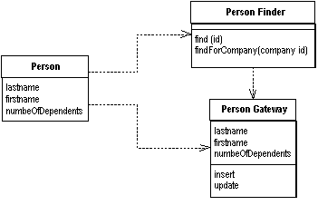

Row Data Gateway (Шлюз к данным записи)

Паттерн проектирования Row Data Gateway
Описание Row Data Gateway
Объект выступает в роли шлюза к отдельной записи в источнике данных. Один экземпляр на одну запись.
Встраивание кода доступа к БД в объекты, хранящиеся в памяти, может привести в некоторым неудобствам. Во-первых, если ваши объекты содержат бизнес-логику, добавление взаимодействия с БД увеличит сложность. Вскоре тестирование станет неудобным, если объекты, хранящиеся в памяти, завязаны на БД. Тесты станут медленнее из-за доступа к БД.
Объект шлюза к записи представляется в точности, как запись в БД, но при этом даёт возможность доступа посредством штатных средств языка программирования. Все подробности доступа к БД скрыты за этим интерфейсом.
Пример: объект шлюза PersonGateway, данные о записи из таблицы person и методы insert и update, которые позволяют прозрачно работать с записью.
Качественная реализация этого паттерна на PHP существует в частности в Zend Framework в классе Zend_Db_Table_Row
Использована иллюстрация с сайта Мартина Фаулера.